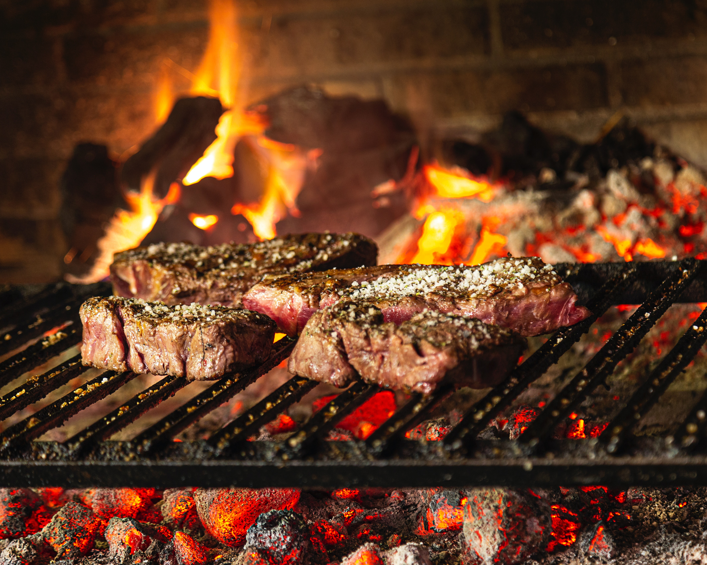

Savory Steak

If you've always been a fan of juicy and savory steak you'll love this recipe!
Marinated and tested to be delicious. You'll have plenty of juice and a delectable
rich flavor that you'll want to make time and time again!
Ingredients
- Steak
- Salt
- Pepper
- Lemon
- 2 Tbsp of butter
- Oregano
Creation of the Steak
- Season the steak with salt and pepper, then top it off with Oregano.
- Create little silts in the top of the steak to make sure it cooks evenly and thoroughly
- Set pan to medium heat
- Slice the 2 Tbsp of butter into two peices and let it dissolve on the pan.
- Throw the seasoned steak in on top
- Grate some lemon skin on top of the steak
- Baste butter on top of the steak
- Flip and cook all sides of the steak
- Cook until internal temperature reaches 125F
- Allow steak to set for 5 minutes
- Serve your savory and juicy steak.